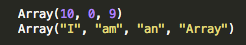
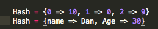

Hashes vs Arrays in Ruby
In Ruby Hashes and Arrays are very similar. They are both used to store information using an indexing system. The way the index system works is every object has a key and a corresponding value. This is exactly the same for both however arrays can only use intergers for their keys while hashes can use intergers or strings. What difference does it make? Well it depends on what you want to make but if you choose the right option it could save you lots of work!
Arrays

Arrays are always indexed using an integer system that starts with 0. The first element (item in the array) is number 0 nd the second element is number 1 and so on. You can change the order of the objects in the array but the keys used to call the objects will always remain in the same order. This can be a big advantage in some cases. For example when I wrote the median method it was easy to do because I could sort the objects in the array by size(value) and then find the array length and take the object in the middle.
Hashes

Hashes are almost the same as an array except they are able to use a string or an interger as their keys. This makes them perfect if you need to be able to call the objects using a specific key. For example if you want to make a dictionary, this would be the perfect thing to use. I still don't have much experience with hashes but I'm sure that will change soon.
How to decide which to use
So I hate having to type when I don't have to. I am always looking for ways to minimize the work that I have to do and make my code more efficient. That is why it is so important to know when to choose a hash or an array. If you look at the pictures above, the first hash and the first array are exactly the same. The hash takes much more typing to create because the array already has key values. However if I wanted to call objects with strings a hash is definately the way to go. It still can technically be done with an array but that will take much more work. I hope this helps!